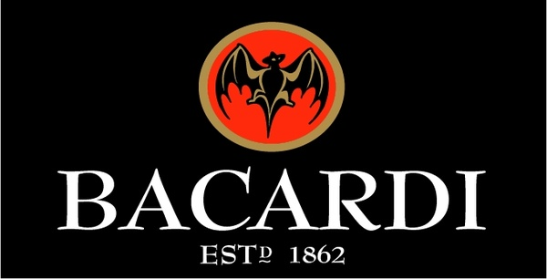
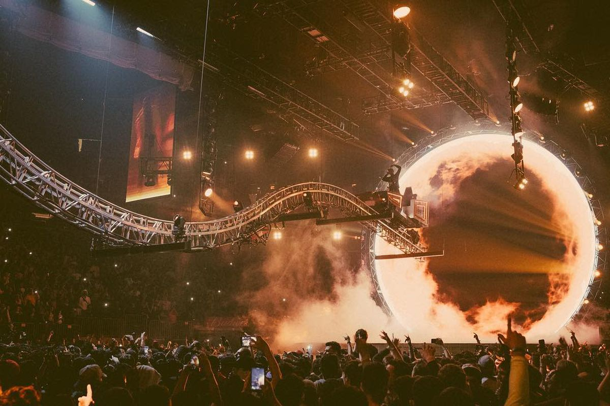

Volgens betrouwbare bronnen zijn we geïnformeerd dat er op WooHah! 2020 een “Bacardi” stage zal komen. Dat houdt in dat er dj’s zullen zijn van Bacardi zelf en dat er gratis mixdrankjes zullen zijn voor de eerste duizend bezoekers. De stage is wel 18+ en er zijn beveiligers die het controleren
Zoals meeste hiphop fans het weten heeft rapper Travis Scott een rollercoaster tijdens zijn shows. Dat zal er op WooHah! 2020 ook aanwezig zijn. Kijk uit dat je niet misselijk wordt!
Op WooHah! 2020 zullen er geen plastic bekers meer zijn. Alle plastic bekers zullen vervangen worden door papieren bekers. Zo maakt WooHah! kans op meest duurzame hiphop-festival op de hele wereld.